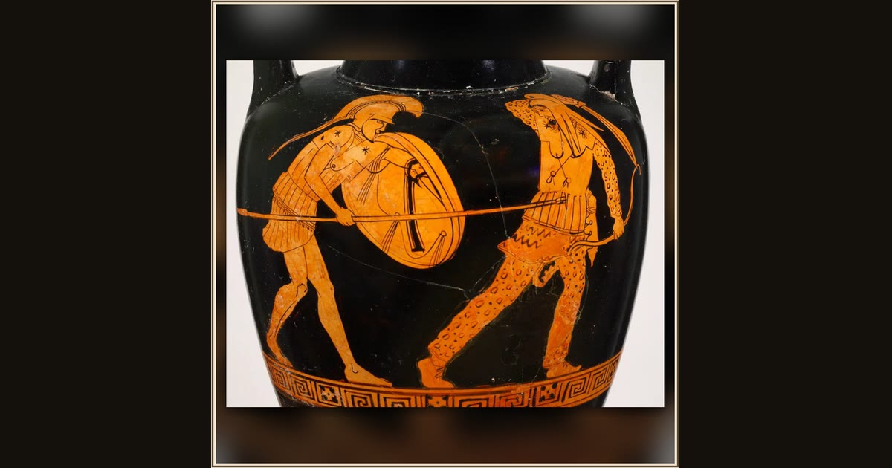

Terracotta Nolan amphora (jar)
Greek, Attic · ca. 480–470 BCE · met
On an Attic amphora painted a decade after Marathon, a hoplite with spear and shield closes on an archer in patterned trousers, as the Athenians ran at the Persian line (6.112.2) Explore its place in Herodotus's Histories, Book VI, chapter 276.